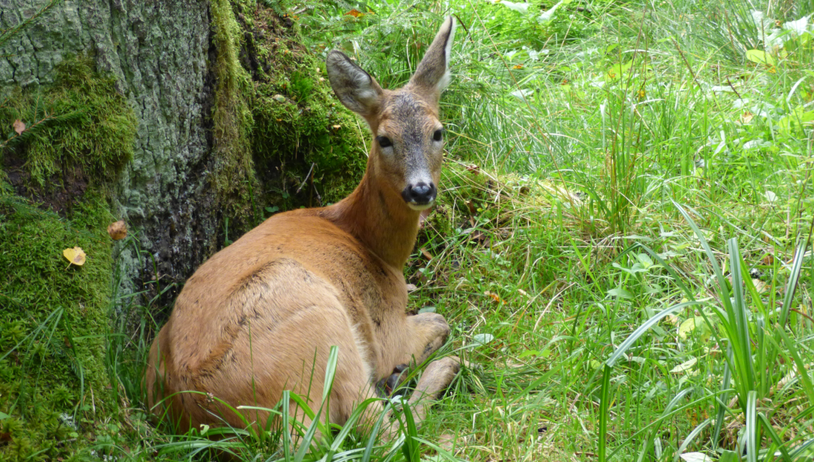

Vispārīgs raksturojums
Vietējai faunai pieskaita sugas, kas izveido pastāvīgas populācijas. Mūsdienu Latvijas fauna sāka veidoties pirms apmēram 12 gadu tūkstošiem (pēc pēdējā apledojuma), tādējādi Latvijā ir viena no visjaunākajām faunām pasaulē. Sākotnēji Latvijas teritorijā bija tundras klimats ar tai raksturīgiem aukstuma izturīgiem dzīvniekiem. Klimatam kļūstot siltākam, dzīvnieku daudzveidība palielinājās. Faunas veidošanās turpinās arī mūsdienās. 21. gs. sākumā tā strauji papildinās ar jaunām sugām, galvenokārt klimata pasiltināšanās un cilvēka darbības (introdukcijas, reintrodukcijas, neapzinātas ievazāšanas) rezultātā. Baltijas jūras faunu parasti neattiecina uz noteiktas valsts teritoriju, bet gan uz visu jūru. Latvijas piekrastes ūdeņi, pateicoties zemajam sāļumam, atšķiras ar samazinātu sugu daudzveidību, salīdzinot ar jūras rietumu daļu. Latvija atrodas starp boreālo un nemorālo dabas zonu, kas ir pamatā dažādu faunu sajaukumam. Piemēram, staltbriedis (Cervus elaphus) un lielais susuris (Glis glis) pārstāv nemorālo faunu, brūnais lācis (Ursus arctos) un baltirbe (Lagopus lagopus) – boreālo faunu, bet ģipseņu stublājgrauzis (Phytoecia virgula) – stepes faunu. Novēro atsevišķu sugu nevienmērīgu sastopamību, ko nosaka attālums no to pamatareāla, piemēram, urālpūce (Strix uralensi) sastopama galvenokārt Austrumlatvijā, bet gredzenūbele (Streptopelia decaocto) un brūnvālīšu zilenītis (Maculinea teleius) – Rietumlatvijā.
Informācija ņemta no:Nacionālās enciklopēdijas mājaslapas
Attēls ņemts no:Dabas muzeja mājaslapas
Sugu tabula
| Klase | Sugu skaits | Īpašīi aizsargājamo sugu skaits |
|---|---|---|
| Bezmugurkaulnieki | >14000 | 104 |
| Apaļmutnieki | 3 | 3 |
| Zivis | 101 | 0 |
| Abinieki | 13 | 6 |
| Rāpuļi | 7 | 3 |
| Putni | 371 | 95 |
| Zīdītāji | 69 | 26 |